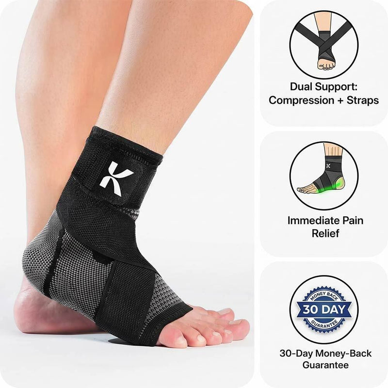

Koprez
BUY 1 GET 1 FREE, Plantar Fasciitis Sleeve Trusted by 200,000+
no ar há 192 dias · top 10 do mercado (#7)
Copie a oferta "leve 2, pague 1" com garantia de 30 dias, o mecanismo "não é inflamação, é desgaste" e o vídeo caseiro de vestir a luva. Evite promessa de "cura completa em 30 dias" (risco de reprovação na Meta) e a operação de 4 páginas, que é escala, não ponto de partida.

luva de compressão com faixa de suporte no arco; vendida em "leve 2, pague 1" nos anúncios. observado
| Principais produtos | Leitura |
|---|---|
| Koprez® Foot Sleeve | campeão no nicho de dor no pé |
| Catálogo (46 itens, $3,99 a $149,94) | luva de pé, joelheira, palmilha "custom", pacotes 6x/8x/12x, suplemento e e-book |
| Ritmo de criativo | Valor | Leitura |
|---|---|---|
| criativos únicos na amostra de 50 | 13 | títulos distintos nos 50 anúncios ativos mais recentes |
| por dia | ~45 | janela da amostra: 1,1 dias |
| únicos por semana | ~83 | capacidade de produzir criativo novo |
| duplicação | 3,8x | anúncios ÷ criativos únicos: mesma peça em várias variações |
| longevidade máxima | 192 dias | o criativo campeão é o mais longevo da mineração (não o mais recente) |
| mix de formato | vídeo 62% · estático 38% | amostra de 132 anúncios no nicho |
| nível de sofisticação | nível 1 | vídeo de celular, estático com texto ou catálogo: produção barata |
| # | Criativo | Dias no ar | Formato | Ângulo / hook | Biblioteca |
|---|---|---|---|---|---|
| 1 | BUY 1 GET 1 FREE, Plantar Fasciitis Sleeve Trusted by 200,000+ | 192 dias | VIDEO | If you've had plantar fasciitis for more than a few weeks, ice and stretches aren't going to fix it. Here's why: the tissue isn't inflamed a… | abrir ↗ |
| 2 | Black Friday Buy 1 Get 1 FREE + 30-Day Money-Back Guarantee | 191 dias | VIDEO | BUY 1, GET 1 FREE for Black Friday + 30-Day Money-Back Guarantee! End Plantar Fasciitis For Good: ✅ Stops morning stabbing pain ✅ Complete h… | abrir ↗ |
| 3 | Physical Therapist Explains Why Your Plantar Fasciitis Won't Heal (And What Actually Works) | 180 dias | IMAGE | So why won't your plantar fasciitis heal? Because your tissue stopped getting enough blood flow months ago. I've been a physical therapist f… | abrir ↗ |
| 4 | A Physical Therapist on the Plantar Fasciitis Mistake 9 Out of 10 Patients Are Still Making | 170 dias | IMAGE | I've treated plantar fasciitis for over twenty years. And last year, a woman sat in my office crying. Not from the pain. She'd gotten used t… | abrir ↗ |

| Elemento | Leitura |
|---|---|
| Big idea | Gelo e alongamento não resolvem porque a fáscia não está mais inflamada, está se desgastando; a luva devolve fluxo de sangue e segura o arco. |
| Mecanismo | "Biolateral compression" + faixas de suporte que "param o ciclo de re-ruptura" |
| Hook | Fisioterapeuta/filha contando o caso ("My Mom Did Everything Right... She Still Got Worse") |
| Presell | advertorial em páginas-jornal ("Foot Health Digest", "The Nurse Veteran") antes da loja |
| Objeção principal | "já tentei de tudo": respondida com o mecanismo novo + garantia de 30 dias + "leve 2" |
| Dado | Motivo | Método tentado |
|---|---|---|
| Gasto e impressões dos anúncios | a Meta não publica gasto de anúncio comercial fora da UE | conector Meta Ads e Biblioteca pública |
| Pixel ID | não aparece no HTML estático | coletar.mjs (grep do HTML), sem navegador |
| Primeira captura no Wayback | o CDX não devolveu registro | Wayback CDX; idade usada = data do 1º produto |
| Visitas exatas | total atrás do cadastro do SimilarWeb; trafego.js bloqueado (CloudFront) | trafego.js (5 tentativas), página pública via WebFetch, rank global |
| Eixo do scorecard | Nota | Base |
|---|---|---|
| Sourcing simples | 2/2 | luva de compressão genérica, achável em volume no AliExpress |
| Ticket fecha sem escada complexa | 1/2 | $39,99 avulso, mas a loja empurra "leve 2" e pacotes de 6 a 12 |
| Criativo simples de produzir | 2/2 | vídeo de celular (unboxing + vestir) e advertorial de texto |
| Mecanismo com urgência | 2/2 | dor física diária, pior nos primeiros passos |
| Investimento de entrada baixo | 1/2 | opera 4 páginas e 912 anúncios: o molde completo pede verba |
| Sem dependência de autoridade | 1/2 | usa "fisioterapeuta explica" como autoridade emprestada |
| Soma | 9/12 | nível médio calculado |